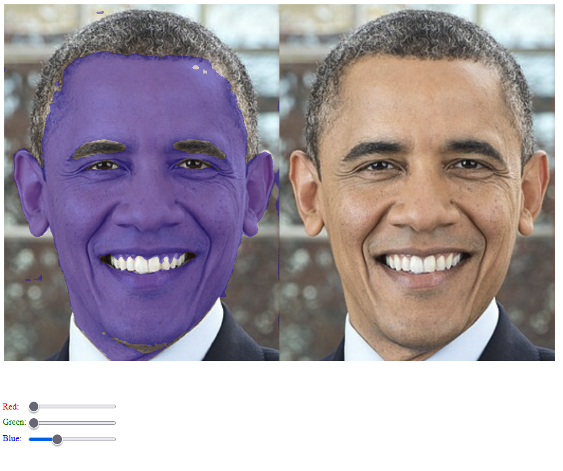

Her kan du læse om mine forskellige projekter
Hjemmeside til GCP-destination
Designvalg: farver
Her har vi valgt at bruge blå toner til vores tekstkasser og baggrund, eftersom Boston lå ud til havet ¯\_(ツ)_/¯. Derudover brugte vi en cremefarve til teksten for at man nemt kunne se forskel uden at der var alt for meget kontrast.

Eksempel på html
Denne html-bid viser hvordan vi har lavet vores topnav med html. Først har vi en div med en id som navbar, som vi hvordan har lavet specificeret i CSS. Det første tag herefter er et link til venstre side, som linker til hjem, som vi har kaldt for index.html, der har sin CSS-class active. Heri har vi brugt tagget strong, som gør teksten bold. Næste tag er en div for de links i vores navbar der skal være i dens højre side, og inden i den har vi så linksne. De linker så til hvert deres html-fil og har hvert deres navn.

Eksempel på CSS
Først giver vi vores navbar sin farve, og lader derefter dens position være fixed, samt sætter afstanden til toppen af hjemmesiden til at være 0, så den netop kommer i toppen. Herefter lader vi den fylde hele bredden af vinduet med width. Herefter kommer display: flex; der meget kort sagt lader vores div være en flexbox, hvilket vil sige der gælder specielle regler for dens og dets childrens omgang med andre elementer i hjemmesiden, f.eks. kan man bruge justify-contet: space evenly; som her, hvor vi altså beder den om at dens children, elementer i navbaren, har ens mellemrum. Det sidste, transition, kom fra et forsøg på at animere, at navbaren "gled ned" når man scrollede op på hjemmesiden, men det virkede dog ikke og nu tjener den intet formål.

Projekt med billedmanipulation
Projektbeskrivelse
Med udgangspunkt i følgende case, skal du udvikle en del af en løsning. Alle ved at billeder af hvordan verden, og især os selv, ser ud er dybt uinteressante. For at ændre på dette skal I lave et billedbehandlingsprogram.- Kan redigere et billede ved manipulation på pixelniveau.
- Kan tilføje effekter.
- Bestemme hvad der er kerne- og sekundære-faciliteter.
- Udføre en brugertest og en tilretning af projektet.
Vores program
Kernefaciliteter og effekterne
Som løsning på denne problemstilling har vi udviklet et program, der kan identificere et "spænd" (uddybes senere) af en farve, og herefter ændre RGB-værdierne af pixelsne i dette spænd. Det, som vi helt konkret har brugt det til, er at ændre på menneskers hudfarve, f.eks. ved at gøre Obama lilla (billedet er fra Wikipedia og er i public domain). Man kan ændre i den tilføjede RGB-værdi ved at skyde på slidersne.
Manipulation på pixelniveau
Den mest interessante kodestump fra vores program er den funktion, der ændrer farverne på en enkelt pixel. Dette foregår ved, at man først lagrer alle RGB-værdierne (ikke vist), hvorefter disse hives ud for den specifikke pixel ved (i,j). Den første parameter i getPixelValue() referer til, om det er den blå, grønne eller røde værdi for denne pixel der benyttes. Sådan defineres r-,g- og b-værdierne for hver enkel pixel. Herefter er der opstillet tre kriterier for, at der ændres ved farven af en pixel:
- Pixelen skal have end samlet RGB-værdi på mere end 60, således at de mørkeste pixels ikke vælges.
- Pixelen må ikke have mere end en samlet RGB-sum på 700, hvilket gør, at de lyseste pixelse ikke påvirkes.
- Til sidst skal den røde værdi afvige mere end 14 fra den gennemsntlige værdi af farverne i pixelen. Dette skyldes at der er mere rød i pixelen end blå og grøn, når der er tale om hud.
Brugertesting og sekundære-faciliteter
I starten af programmets udvikling skulle man manuelt ændre i den nye farve inde i koden, så vi tilføjede sliders så man kunne gøre det nemmere. Under brugertesting fandt vi ud af, at man evt. kunne lave tekst-felter uden for slidersne så man stadig kunne taste RGB-værdien ind, samt en drag-n-drop funktion så man nemmere uploade filen. Derudover diskuterede vi også, hvordan man kunne lave et program, der beholdte en pixels lysstyrke (r+b+g-værdi), således at skyggerne fortsatte med at være tydelige når man skruede op for farverne.
Hvis man vil prøve programmet, kan du det her. Pga. licens osv. som vi ikke har sat os ind i, er der bare mit Lectio-billede, hvor man også kan se nogle af programmets begrænsninger.